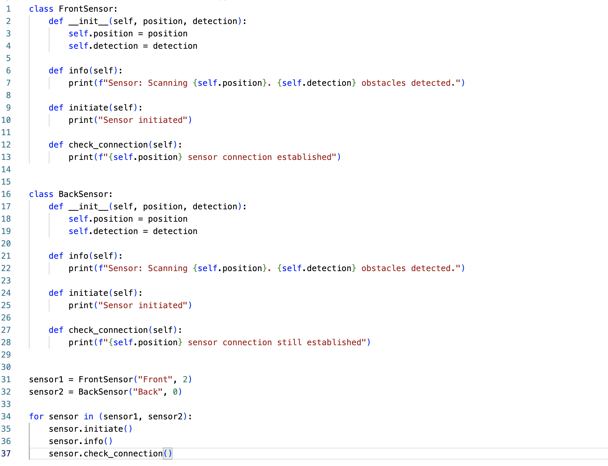
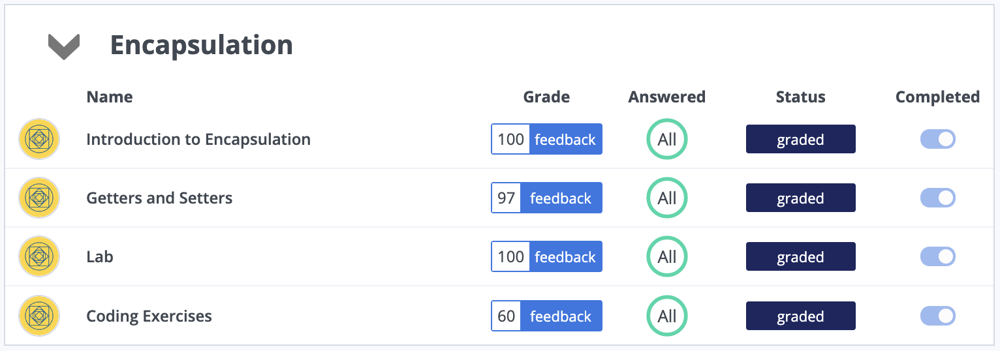

Unit 5: Artefacts
Polymorphism
Task: Write a Python program with polymorphism that is usable within the summative assessment for the driverless car.
This was my attempt to simulate the sensors of an obstacle detection system within the driverless car. To add some actual functionality to this program, I would need to simulate an environment in which these sensors could actually detect obstacles. Looking back at it now, after having completed the module, I would definitely like to do that. I would also like to write more code or the sensors itself, and generate logic which governs what actually happens when an obstacle is detected.
Additional Exercises and Experimentation
These questions/tasks were found throughout the module.
List 4 phases of the software development process and explain what they accomplish:
1. Request: The programmer receives a software development request from a client. During this phase, the client describes the problem they have, and potential solutions are discussed.
2. Analysis: During this phase, the problem, its description, and its potential solutions are analyzed. This allows the programming team to further their understanding of the problem, and discover potential solutions for it. During this phase, the team might already begin to design/prototype solutions and show them to the client, to ensure that they have understood the task correctly, and the client is happy with the proposed solution.
3. Design: During the design phase, the team designs the solution for the client. As you can see, “Analysis” and “Design” have similar components, and they might occasionally mix. This is also a reason why attempting to follow this process step by step might not be possible.
4. Implementation: Implementation: During this phase, the programmer writes the program. This is also known as the coding phase. Again, as mentioned previously, this phase might mix with the previous phases. While the programmers are writing the code, they might find flaws in the design, or come up with better solutions to the problem
Why is it not a good idea to skip analysis and design and go straight to coding?
Skipping analysis and design, especially for larger projects, is not recommended. Analysis the problem builds a foundation for the programmer. Additionally, analyzing the task ahead allows the programmer to break the project down into smaller problems, each of which are much easier to be solved. Designing the system allows the programmer to plan out the system and its components, as well as how they interact with each other. During this phase, the programmer might discover aspect of the program that they would have otherwise missed out on.
Codio
As part of my studies and practice, I completed the "Encapsulation" unit on Codio.
